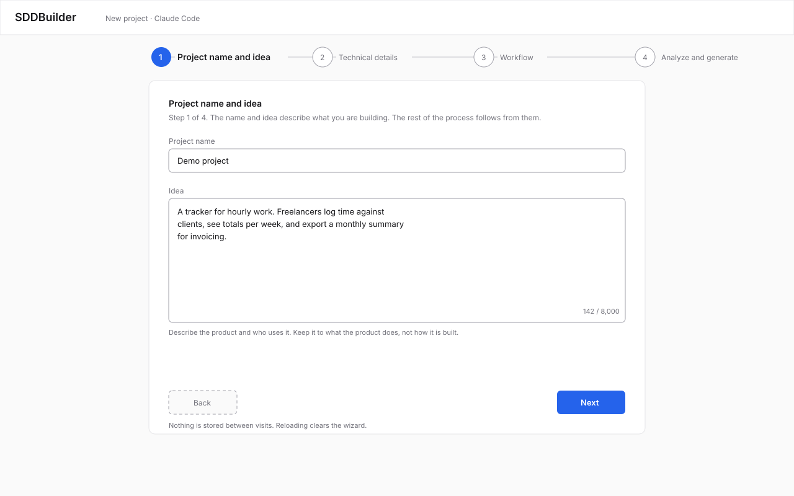
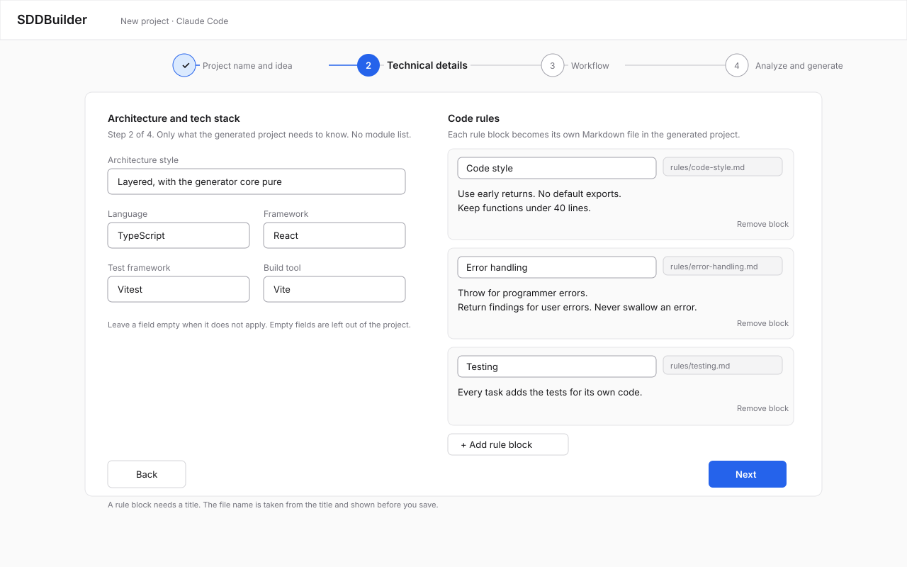
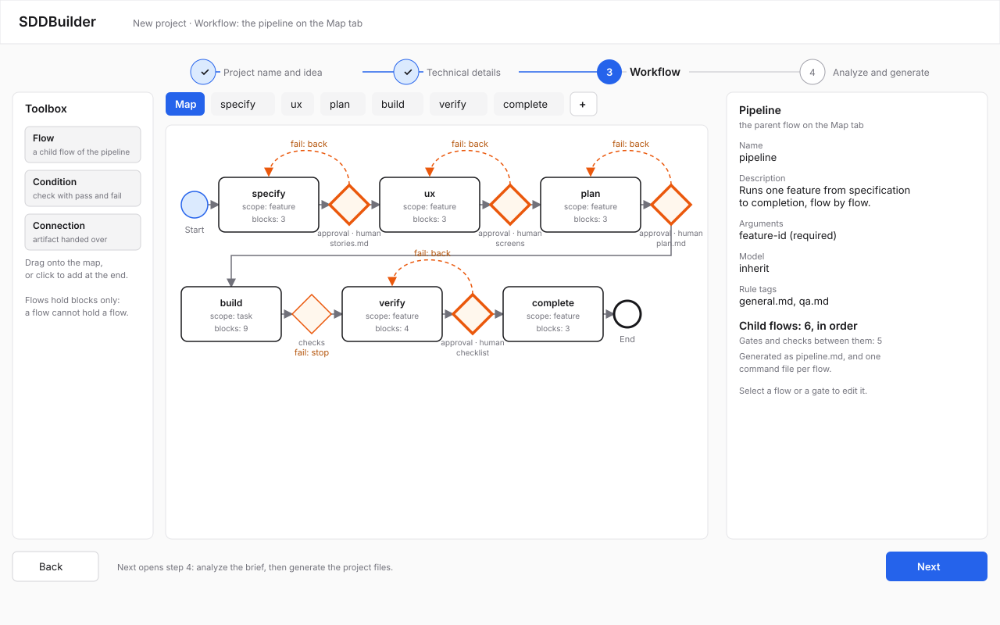
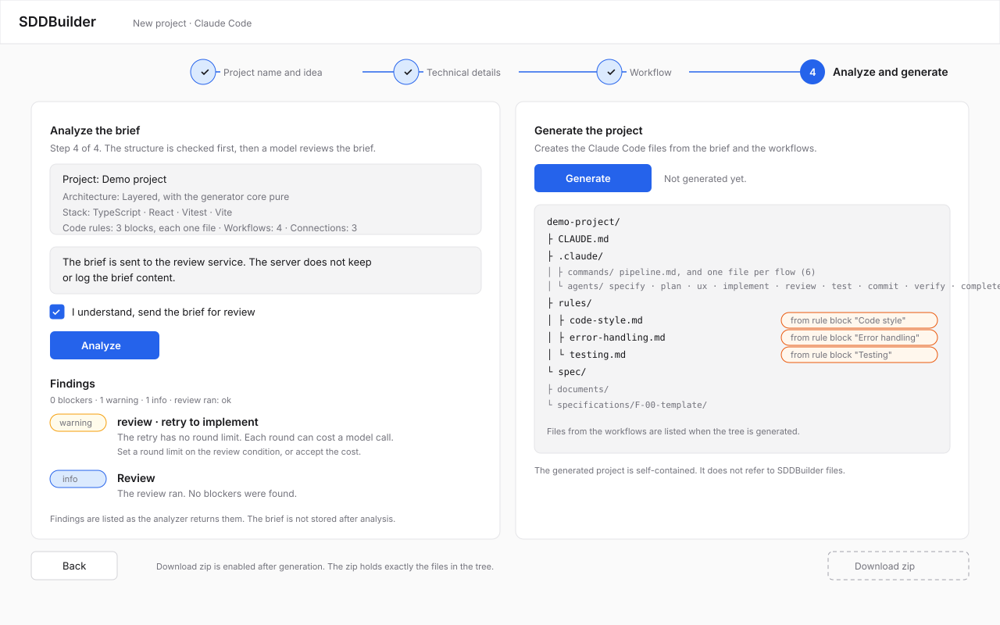

Four steps: project name and idea; technical details (one file per rule block); workflow (visual builder); analyze and generate. No Brief / Builder switch. Wireframes only; read screens.md for the decisions and the spec impact.
First step. Back is off. Nothing is stored between visits.

Architecture and tech stack; code rules as separate blocks, each becomes its own Markdown file. No modules.

The approved global map inside the wizard, starting from the reference process.

Privacy checkbox and Analyze; findings; Generate with the file tree; Download zip after generation.
